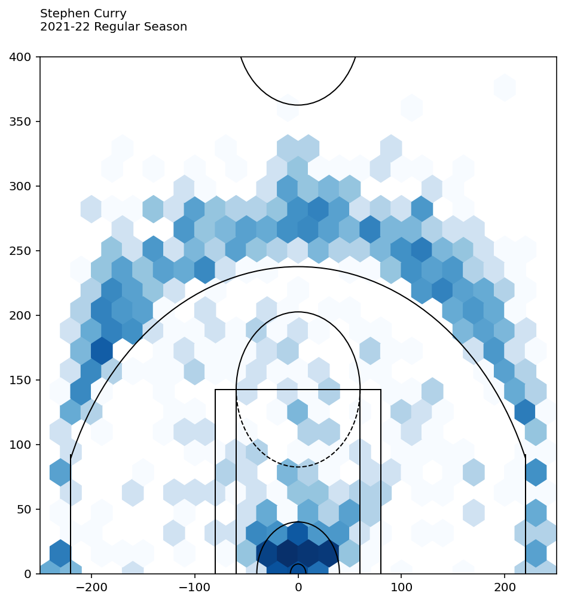

import time
def multistr(x, n=2):
return x * n
t0 = time.time()
x = 'Python'
print(multistr(x, n=10))
t1 = time.time()
print("Time used: ", t1-t0)Projects
Exercise 1 (Hello world!) Please set up a Python developing environment, including for .py file and for notebook, that will be used across the semester. Then print Hello World!.
Exercise 2 (Define a function and play with time) Please play with the following codes in a Jupyter notebook. We haven’t talked about any of them right now. Try to guess what they do and write your guess in markdown cells.
%conda list# packages in environment at C:\Users\Xinli\anaconda3\envs\base23:
#
# Name Version Build Channel
_tflow_select 2.3.0 mkl
abseil-cpp 20211102.0 h36ffca9_3 conda-forge
absl-py 1.3.0 pyhd8ed1ab_0 conda-forge
aiohttp 3.8.3 py310h8d17308_1 conda-forge
aiosignal 1.3.1 pyhd8ed1ab_0 conda-forge
alabaster 0.7.12 py_0 conda-forge
anyio 3.6.2 pyhd8ed1ab_0 conda-forge
argon2-cffi 21.3.0 pyhd8ed1ab_0 conda-forge
argon2-cffi-bindings 21.2.0 py310h8d17308_3 conda-forge
asttokens 2.1.0 pyhd8ed1ab_0 conda-forge
astunparse 1.6.3 pyhd8ed1ab_0 conda-forge
async-timeout 4.0.2 pyhd8ed1ab_0 conda-forge
attrs 21.4.0 pyhd8ed1ab_0 conda-forge
babel 2.11.0 pyhd8ed1ab_0 conda-forge
backcall 0.2.0 pyh9f0ad1d_0 conda-forge
backports 1.0 py_2 conda-forge
backports.functools_lru_cache 1.6.4 pyhd8ed1ab_0 conda-forge
beautifulsoup4 4.11.1 pyha770c72_0 conda-forge
blas 1.0 mkl
bleach 5.0.1 pyhd8ed1ab_0 conda-forge
blinker 1.5 pyhd8ed1ab_0 conda-forge
brotli 1.0.9 hcfcfb64_8 conda-forge
brotli-bin 1.0.9 hcfcfb64_8 conda-forge
brotlipy 0.7.0 py310h8d17308_1005 conda-forge
bzip2 1.0.8 he774522_0
c-ares 1.18.1 h8ffe710_0 conda-forge
ca-certificates 2022.10.11 haa95532_0
cached-property 1.5.2 hd8ed1ab_1 conda-forge
cached_property 1.5.2 pyha770c72_1 conda-forge
cachetools 5.2.0 pyhd8ed1ab_0 conda-forge
certifi 2022.9.24 py310haa95532_0
cffi 1.15.1 py310h628cb3f_2 conda-forge
charset-normalizer 2.1.1 pyhd8ed1ab_0 conda-forge
click 8.1.3 win_pyhd8ed1ab_2 conda-forge
click-completion 0.5.2 py310h5588dad_5 conda-forge
click-log 0.4.0 pyhd8ed1ab_0 conda-forge
colorama 0.4.6 pyhd8ed1ab_0 conda-forge
contourpy 1.0.6 py310h232114e_0 conda-forge
cpuonly 2.0 0 pytorch
cryptography 38.0.3 py310h52f42fa_0 conda-forge
cycler 0.11.0 pyhd8ed1ab_0 conda-forge
dataclasses 0.8 pyhc8e2a94_3 conda-forge
debugpy 1.6.3 py310h00ffb61_1 conda-forge
decorator 5.1.1 pyhd8ed1ab_0 conda-forge
defusedxml 0.7.1 pyhd8ed1ab_0 conda-forge
docutils 0.17.1 py310h5588dad_3 conda-forge
entrypoints 0.4 pyhd8ed1ab_0 conda-forge
executing 1.2.0 pyhd8ed1ab_0 conda-forge
flatbuffers 2.0.7 h0e60522_0 conda-forge
flit-core 3.8.0 pyhd8ed1ab_0 conda-forge
fonttools 4.38.0 py310h8d17308_1 conda-forge
freetype 2.12.1 h546665d_0 conda-forge
frozenlist 1.3.3 py310h8d17308_0 conda-forge
gast 0.5.3 pyhd8ed1ab_0 conda-forge
gettext 0.21.1 h5728263_0 conda-forge
ghp-import 2.1.0 pyhd8ed1ab_0 conda-forge
giflib 5.2.1 h8d14728_2 conda-forge
gitdb 4.0.9 pyhd8ed1ab_0 conda-forge
gitpython 3.1.29 pyhd8ed1ab_0 conda-forge
glib 2.74.1 h12be248_1 conda-forge
glib-tools 2.74.1 h12be248_1 conda-forge
google-auth 2.14.0 pyh1a96a4e_0 conda-forge
google-auth-oauthlib 0.4.6 pyhd8ed1ab_0 conda-forge
google-pasta 0.2.0 pyh8c360ce_0 conda-forge
greenlet 2.0.1 py310h00ffb61_0 conda-forge
grpc-cpp 1.48.0 hbb1c445_0 conda-forge
grpcio 1.48.0 py310h1ff0356_0 conda-forge
gst-plugins-base 1.18.5 he07aa86_3 conda-forge
gstreamer 1.18.5 hdff456e_3 conda-forge
h5py 3.7.0 nompi_py310hae7a582_102 conda-forge
hdf5 1.12.2 nompi_h2a0e4a3_100 conda-forge
icu 58.2 ha925a31_3
idna 3.4 pyhd8ed1ab_0 conda-forge
imagesize 1.4.1 pyhd8ed1ab_0 conda-forge
importlib-metadata 5.0.0 pyha770c72_1 conda-forge
importlib_metadata 5.0.0 hd8ed1ab_1 conda-forge
importlib_resources 5.10.0 pyhd8ed1ab_0 conda-forge
intel-openmp 2022.1.0 h57928b3_3787 conda-forge
ipykernel 6.17.1 pyh025b116_0 conda-forge
ipython 8.6.0 pyh08f2357_1 conda-forge
ipython_genutils 0.2.0 py_1 conda-forge
ipywidgets 7.7.2 pyhd8ed1ab_0 conda-forge
jedi 0.18.1 pyhd8ed1ab_2 conda-forge
jinja2 3.1.2 pyhd8ed1ab_1 conda-forge
joblib 1.2.0 pyhd8ed1ab_0 conda-forge
jpeg 9e h8ffe710_2 conda-forge
jsonschema 3.2.0 pyhd8ed1ab_3 conda-forge
jupyter-book 0.13.1 pyhd8ed1ab_0 conda-forge
jupyter-cache 0.4.3 pyhd8ed1ab_0 conda-forge
jupyter-server-mathjax 0.2.6 pyhc268e32_0 conda-forge
jupyter-sphinx 0.3.2 pyhd8ed1ab_1 conda-forge
jupyter_client 7.4.5 pyhd8ed1ab_0 conda-forge
jupyter_core 5.0.0 py310h5588dad_0 conda-forge
jupyter_server 1.23.1 pyhd8ed1ab_0 conda-forge
jupyterlab_pygments 0.2.2 pyhd8ed1ab_0 conda-forge
jupyterlab_widgets 1.1.1 pyhd8ed1ab_0 conda-forge
keras 2.9.0 pyhd8ed1ab_0 conda-forge
kiwisolver 1.4.4 py310h232114e_1 conda-forge
krb5 1.19.3 h1176d77_0 conda-forge
latexcodec 2.0.1 pyh9f0ad1d_0 conda-forge
lcms2 2.14 h90d422f_0 conda-forge
lerc 4.0.0 h63175ca_0 conda-forge
libabseil-static 20211102.0 cxx11_h58a5ce6_3 conda-forge
libblas 3.9.0 16_win64_mkl conda-forge
libbrotlicommon 1.0.9 hcfcfb64_8 conda-forge
libbrotlidec 1.0.9 hcfcfb64_8 conda-forge
libbrotlienc 1.0.9 hcfcfb64_8 conda-forge
libcblas 3.9.0 16_win64_mkl conda-forge
libclang 12.0.1 default_h81446c8_4 conda-forge
libcurl 7.86.0 heaf79c2_1 conda-forge
libdeflate 1.14 hcfcfb64_0 conda-forge
libffi 3.4.2 hd77b12b_4
libglib 2.74.1 he8f3873_1 conda-forge
libiconv 1.17 h8ffe710_0 conda-forge
liblapack 3.9.0 16_win64_mkl conda-forge
libogg 1.3.4 h8ffe710_1 conda-forge
libpng 1.6.38 h19919ed_0 conda-forge
libprotobuf 3.20.1 h12be248_4 conda-forge
libsodium 1.0.18 h8d14728_1 conda-forge
libsqlite 3.39.4 hcfcfb64_0 conda-forge
libssh2 1.10.0 h680486a_3 conda-forge
libtiff 4.4.0 h8e97e67_4 conda-forge
libuv 1.40.0 he774522_0
libvorbis 1.3.7 h0e60522_0 conda-forge
libwebp-base 1.2.4 h8ffe710_0 conda-forge
libxcb 1.13 hcd874cb_1004 conda-forge
libxml2 2.10.3 hc3477c8_0 conda-forge
libxslt 1.1.37 h0192164_0 conda-forge
libzlib 1.2.13 hcfcfb64_4 conda-forge
linkify-it-py 1.0.3 pyhd8ed1ab_0 conda-forge
lxml 4.9.1 py310hc0e5b84_1 conda-forge
m2w64-gcc-libgfortran 5.3.0 6 conda-forge
m2w64-gcc-libs 5.3.0 7 conda-forge
m2w64-gcc-libs-core 5.3.0 7 conda-forge
m2w64-gmp 6.1.0 2 conda-forge
m2w64-libwinpthread-git 5.0.0.4634.697f757 2 conda-forge
markdown 3.4.1 pyhd8ed1ab_0 conda-forge
markdown-it-py 1.1.0 pyhd8ed1ab_0 conda-forge
markupsafe 2.1.1 py310h8d17308_2 conda-forge
matplotlib 3.6.2 py310h5588dad_0 conda-forge
matplotlib-base 3.6.2 py310h51140c5_0 conda-forge
matplotlib-inline 0.1.6 pyhd8ed1ab_0 conda-forge
mdit-py-plugins 0.2.8 pyhd8ed1ab_0 conda-forge
mistune 0.8.4 py310he2412df_1005 conda-forge
mkl 2022.1.0 h6a75c08_874 conda-forge
msys2-conda-epoch 20160418 1 conda-forge
multidict 6.0.2 py310h8d17308_2 conda-forge
munkres 1.1.4 pyh9f0ad1d_0 conda-forge
myst-nb 0.13.2 pyhd8ed1ab_0 conda-forge
myst-parser 0.15.2 pyhd8ed1ab_0 conda-forge
nb_conda_kernels 2.3.1 py310h5588dad_2 conda-forge
nba-api 1.1.14 pypi_0 pypi
nbclassic 0.4.8 pyhd8ed1ab_0 conda-forge
nbclient 0.5.13 pyhd8ed1ab_0 conda-forge
nbconvert 6.5.3 pyhd8ed1ab_0 conda-forge
nbconvert-core 6.5.3 pyhd8ed1ab_0 conda-forge
nbconvert-pandoc 6.5.3 pyhd8ed1ab_0 conda-forge
nbdime 3.1.1 pyhd8ed1ab_0 conda-forge
nbformat 5.7.0 pyhd8ed1ab_0 conda-forge
nest-asyncio 1.5.6 pyhd8ed1ab_0 conda-forge
notebook 6.5.2 pyha770c72_1 conda-forge
notebook-shim 0.2.2 pyhd8ed1ab_0 conda-forge
numpy 1.23.4 py310h4a8f9c9_1 conda-forge
oauthlib 3.2.2 pyhd8ed1ab_0 conda-forge
openjpeg 2.5.0 hc9384bd_1 conda-forge
openssl 1.1.1s hcfcfb64_0 conda-forge
opt_einsum 3.3.0 pyhd8ed1ab_1 conda-forge
packaging 21.3 pyhd8ed1ab_0 conda-forge
pandas 1.5.1 py310h1c4a608_1 conda-forge
pandoc 2.19.2 h57928b3_1 conda-forge
pandocfilters 1.5.0 pyhd8ed1ab_0 conda-forge
parso 0.8.3 pyhd8ed1ab_0 conda-forge
patsy 0.5.3 pyhd8ed1ab_0 conda-forge
pcre2 10.40 h17e33f8_0 conda-forge
pickleshare 0.7.5 py_1003 conda-forge
pillow 9.2.0 py310hd4fb230_3 conda-forge
pip 22.2.2 py310haa95532_0
platformdirs 2.5.2 pyhd8ed1ab_1 conda-forge
prometheus_client 0.15.0 pyhd8ed1ab_0 conda-forge
prompt-toolkit 3.0.32 pyha770c72_0 conda-forge
protobuf 3.20.1 py310h5588dad_0 conda-forge
psutil 5.9.4 py310h8d17308_0 conda-forge
pthread-stubs 0.4 hcd874cb_1001 conda-forge
pure_eval 0.2.2 pyhd8ed1ab_0 conda-forge
pyasn1 0.4.8 py_0 conda-forge
pyasn1-modules 0.2.7 py_0 conda-forge
pybtex 0.24.0 pyhd8ed1ab_2 conda-forge
pybtex-docutils 1.0.2 py310h5588dad_2 conda-forge
pycparser 2.21 pyhd8ed1ab_0 conda-forge
pydata-sphinx-theme 0.8.1 pyhd8ed1ab_0 conda-forge
pygments 2.13.0 pyhd8ed1ab_0 conda-forge
pyjwt 2.6.0 pyhd8ed1ab_0 conda-forge
pyopenssl 22.1.0 pyhd8ed1ab_0 conda-forge
pyparsing 3.0.9 pyhd8ed1ab_0 conda-forge
pyqt 5.15.4 py310h8a704f9_0 conda-forge
pyqt5-sip 12.9.0 py310h8a704f9_0 conda-forge
pyrsistent 0.19.2 py310h8d17308_0 conda-forge
pysocks 1.7.1 pyh0701188_6 conda-forge
python 3.10.6 h9a09f29_0_cpython conda-forge
python-dateutil 2.8.2 pyhd8ed1ab_0 conda-forge
python-fastjsonschema 2.16.2 pyhd8ed1ab_0 conda-forge
python-flatbuffers 2.0 pyhd8ed1ab_0 conda-forge
python_abi 3.10 2_cp310 conda-forge
pytorch 1.13.0 py3.10_cpu_0 pytorch
pytorch-mutex 1.0 cpu pytorch
pytz 2022.6 pyhd8ed1ab_0 conda-forge
pyu2f 0.1.5 pyhd8ed1ab_0 conda-forge
pywin32 304 py310h00ffb61_2 conda-forge
pywinpty 2.0.9 py310h00ffb61_0 conda-forge
pyyaml 6.0 py310h8d17308_5 conda-forge
pyzmq 24.0.1 py310hcd737a0_1 conda-forge
qt-main 5.15.2 he8e5bd7_7
re2 2022.06.01 h0e60522_0 conda-forge
requests 2.28.1 pyhd8ed1ab_1 conda-forge
requests-oauthlib 1.3.1 pyhd8ed1ab_0 conda-forge
rsa 4.9 pyhd8ed1ab_0 conda-forge
scikit-learn 1.1.3 py310had3394f_1 conda-forge
scipy 1.9.3 py310h578b7cb_2 conda-forge
seaborn 0.12.1 hd8ed1ab_0 conda-forge
seaborn-base 0.12.1 pyhd8ed1ab_0 conda-forge
send2trash 1.8.0 pyhd8ed1ab_0 conda-forge
setuptools 65.5.0 py310haa95532_0
shellingham 1.5.0 pyhd8ed1ab_0 conda-forge
sip 6.5.1 py310h8a704f9_2 conda-forge
six 1.16.0 pyh6c4a22f_0 conda-forge
smmap 3.0.5 pyh44b312d_0 conda-forge
snappy 1.1.9 hfb803bf_2 conda-forge
sniffio 1.3.0 pyhd8ed1ab_0 conda-forge
snowballstemmer 2.2.0 pyhd8ed1ab_0 conda-forge
soupsieve 2.3.2.post1 pyhd8ed1ab_0 conda-forge
sphinx 4.5.0 pyh6c4a22f_0 conda-forge
sphinx-book-theme 0.3.3 pyhd8ed1ab_0 conda-forge
sphinx-comments 0.0.3 pyh9f0ad1d_0 conda-forge
sphinx-copybutton 0.5.0 pyhd8ed1ab_0 conda-forge
sphinx-design 0.1.0 pyhd8ed1ab_0 conda-forge
sphinx-external-toc 0.2.4 pyhd8ed1ab_0 conda-forge
sphinx-jupyterbook-latex 0.4.7 pyhd8ed1ab_0 conda-forge
sphinx-multitoc-numbering 0.1.3 pyhd8ed1ab_0 conda-forge
sphinx-thebe 0.1.2 pyhd8ed1ab_0 conda-forge
sphinx-togglebutton 0.3.2 pyhd8ed1ab_0 conda-forge
sphinxcontrib-applehelp 1.0.2 py_0 conda-forge
sphinxcontrib-bibtex 2.5.0 pyhd8ed1ab_0 conda-forge
sphinxcontrib-devhelp 1.0.2 py_0 conda-forge
sphinxcontrib-htmlhelp 2.0.0 pyhd8ed1ab_0 conda-forge
sphinxcontrib-jsmath 1.0.1 py_0 conda-forge
sphinxcontrib-qthelp 1.0.3 py_0 conda-forge
sphinxcontrib-serializinghtml 1.1.5 pyhd8ed1ab_2 conda-forge
sqlalchemy 1.4.43 py310h8d17308_0 conda-forge
sqlite 3.39.3 h2bbff1b_0
stack_data 0.6.0 pyhd8ed1ab_0 conda-forge
statsmodels 0.13.5 py310h9b08ddd_2 conda-forge
tbb 2021.6.0 h91493d7_1 conda-forge
tensorboard 2.9.0 pyhd8ed1ab_0 conda-forge
tensorboard-data-server 0.6.0 py310h5588dad_3 conda-forge
tensorboard-plugin-wit 1.8.1 pyhd8ed1ab_0 conda-forge
tensorflow 2.9.1 mkl_py310h626feff_1
tensorflow-base 2.9.1 mkl_py310h6a7f48e_1
tensorflow-estimator 2.9.0 py310haa95532_0
termcolor 2.1.0 pyhd8ed1ab_0 conda-forge
terminado 0.17.0 pyh08f2357_0 conda-forge
threadpoolctl 3.1.0 pyh8a188c0_0 conda-forge
tinycss2 1.2.1 pyhd8ed1ab_0 conda-forge
tk 8.6.12 h2bbff1b_0
toml 0.10.2 pyhd8ed1ab_0 conda-forge
torchaudio 0.13.0 py310_cpu pytorch
torchvision 0.14.0 py310_cpu pytorch
tornado 6.2 py310h8d17308_1 conda-forge
traitlets 5.5.0 pyhd8ed1ab_0 conda-forge
typing-extensions 4.4.0 hd8ed1ab_0 conda-forge
typing_extensions 4.4.0 pyha770c72_0 conda-forge
tzdata 2022f h04d1e81_0
uc-micro-py 1.0.1 pyhd8ed1ab_0 conda-forge
ucrt 10.0.22621.0 h57928b3_0 conda-forge
unicodedata2 15.0.0 py310h8d17308_0 conda-forge
urllib3 1.26.11 pyhd8ed1ab_0 conda-forge
vc 14.2 h21ff451_1
vs2015_runtime 14.32.31332 h1d6e394_9 conda-forge
wcwidth 0.2.5 pyh9f0ad1d_2 conda-forge
webencodings 0.5.1 py_1 conda-forge
websocket-client 1.4.2 pyhd8ed1ab_0 conda-forge
werkzeug 2.2.2 pyhd8ed1ab_0 conda-forge
wheel 0.37.1 pyhd3eb1b0_0
widgetsnbextension 3.6.1 pyha770c72_0 conda-forge
win_inet_pton 1.1.0 pyhd8ed1ab_6 conda-forge
wincertstore 0.2 py310haa95532_2
winpty 0.4.3 4 conda-forge
wrapt 1.14.1 py310h8d17308_1 conda-forge
xorg-libxau 1.0.9 hcd874cb_0 conda-forge
xorg-libxdmcp 1.1.3 hcd874cb_0 conda-forge
xz 5.2.6 h8cc25b3_0
yaml 0.2.5 h8ffe710_2 conda-forge
yarl 1.8.1 py310h8d17308_0 conda-forge
zeromq 4.3.4 h0e60522_1 conda-forge
zipp 3.10.0 pyhd8ed1ab_0 conda-forge
zlib 1.2.13 hcfcfb64_4 conda-forge
zstd 1.5.2 h7755175_4 conda-forge
Note: you may need to restart the kernel to use updated packages.Exercise 3 (Fancy Basketball plot) Here is an example of the data analysis. We pull data from a dataset, filter the data according to our needs and plot it to visualize the data. This is just a show case. You are encouraged to play the code, make tweaks and see what would happen. You don’t have to turn in anything.
The data we choose is Stephen Curry’s shots data in 2021-2022 regular season. First we need to load the data. The data is obtained from nba.com using nba_api.
from nba_api.stats.static import players
from nba_api.stats.endpoints import shotchartdetail
player_dict = players.get_players()The shots data we need is in shotchartdetail. However to use it we need to know the id of Stephen Curry using the dataset player_dict.
for player in player_dict:
if player['full_name'] == 'Stephen Curry':
print(player['id'])201939So the id of Stephen Curry is 201939. Let’s pull out his shots data in 2021-2022 season.
results = shotchartdetail.ShotChartDetail(
team_id = 0,
player_id = 201939,
context_measure_simple = 'FGA',
season_nullable = '2021-22',
season_type_all_star = 'Regular Season')
df = results.get_data_frames()[0]
df.head()| GRID_TYPE | GAME_ID | GAME_EVENT_ID | PLAYER_ID | PLAYER_NAME | TEAM_ID | TEAM_NAME | PERIOD | MINUTES_REMAINING | SECONDS_REMAINING | ... | SHOT_ZONE_AREA | SHOT_ZONE_RANGE | SHOT_DISTANCE | LOC_X | LOC_Y | SHOT_ATTEMPTED_FLAG | SHOT_MADE_FLAG | GAME_DATE | HTM | VTM | |
|---|---|---|---|---|---|---|---|---|---|---|---|---|---|---|---|---|---|---|---|---|---|
| 0 | Shot Chart Detail | 0022100002 | 26 | 201939 | Stephen Curry | 1610612744 | Golden State Warriors | 1 | 10 | 9 | ... | Left Side Center(LC) | 24+ ft. | 28 | -109 | 260 | 1 | 0 | 20211019 | LAL | GSW |
| 1 | Shot Chart Detail | 0022100002 | 34 | 201939 | Stephen Curry | 1610612744 | Golden State Warriors | 1 | 9 | 41 | ... | Center(C) | 24+ ft. | 26 | 48 | 257 | 1 | 0 | 20211019 | LAL | GSW |
| 2 | Shot Chart Detail | 0022100002 | 37 | 201939 | Stephen Curry | 1610612744 | Golden State Warriors | 1 | 9 | 10 | ... | Left Side Center(LC) | 24+ ft. | 25 | -165 | 189 | 1 | 1 | 20211019 | LAL | GSW |
| 3 | Shot Chart Detail | 0022100002 | 75 | 201939 | Stephen Curry | 1610612744 | Golden State Warriors | 1 | 6 | 17 | ... | Center(C) | Less Than 8 ft. | 1 | -13 | 12 | 1 | 0 | 20211019 | LAL | GSW |
| 4 | Shot Chart Detail | 0022100002 | 130 | 201939 | Stephen Curry | 1610612744 | Golden State Warriors | 1 | 3 | 11 | ... | Center(C) | Less Than 8 ft. | 2 | -15 | 22 | 1 | 0 | 20211019 | LAL | GSW |
5 rows × 24 columns
df is the results we get in terms of a DataFrame, and we show the first 5 records as an example.
These are all attempts. We are interested in all made. By looking at all the columns, we find a column called SHOT_MADE_FLAG which shows what we want. Therefore we will use it to filter the records.
df_made = df[df['SHOT_MADE_FLAG']==1]
df_made.head()| GRID_TYPE | GAME_ID | GAME_EVENT_ID | PLAYER_ID | PLAYER_NAME | TEAM_ID | TEAM_NAME | PERIOD | MINUTES_REMAINING | SECONDS_REMAINING | ... | SHOT_ZONE_AREA | SHOT_ZONE_RANGE | SHOT_DISTANCE | LOC_X | LOC_Y | SHOT_ATTEMPTED_FLAG | SHOT_MADE_FLAG | GAME_DATE | HTM | VTM | |
|---|---|---|---|---|---|---|---|---|---|---|---|---|---|---|---|---|---|---|---|---|---|
| 2 | Shot Chart Detail | 0022100002 | 37 | 201939 | Stephen Curry | 1610612744 | Golden State Warriors | 1 | 9 | 10 | ... | Left Side Center(LC) | 24+ ft. | 25 | -165 | 189 | 1 | 1 | 20211019 | LAL | GSW |
| 6 | Shot Chart Detail | 0022100002 | 176 | 201939 | Stephen Curry | 1610612744 | Golden State Warriors | 1 | 0 | 27 | ... | Center(C) | Less Than 8 ft. | 2 | -7 | 29 | 1 | 1 | 20211019 | LAL | GSW |
| 9 | Shot Chart Detail | 0022100002 | 352 | 201939 | Stephen Curry | 1610612744 | Golden State Warriors | 2 | 1 | 29 | ... | Center(C) | Less Than 8 ft. | 1 | -1 | 10 | 1 | 1 | 20211019 | LAL | GSW |
| 16 | Shot Chart Detail | 0022100002 | 510 | 201939 | Stephen Curry | 1610612744 | Golden State Warriors | 3 | 2 | 23 | ... | Center(C) | Less Than 8 ft. | 1 | 7 | 8 | 1 | 1 | 20211019 | LAL | GSW |
| 18 | Shot Chart Detail | 0022100002 | 642 | 201939 | Stephen Curry | 1610612744 | Golden State Warriors | 4 | 5 | 34 | ... | Center(C) | 24+ ft. | 26 | 48 | 260 | 1 | 1 | 20211019 | LAL | GSW |
5 rows × 24 columns
We also notice that there are two columns LOC_X and LOC_Y shows the coordinates of the attempts. We will use it to draw the heatmap. The full code for drawing out the court draw_court is folded below. It is from Bradley Fay GitHub.
Note
Note that, although draw_cort is long, it is not hard to understand. It just draws a court piece by piece.
Code
from matplotlib.patches import Circle, Rectangle, Arc
import matplotlib.pyplot as plt
def draw_court(ax=None, color='gray', lw=1, outer_lines=False):
"""
Returns an axes with a basketball court drawn onto to it.
This function draws a court based on the x and y-axis values that the NBA
stats API provides for the shot chart data. For example, the NBA stat API
represents the center of the hoop at the (0,0) coordinate. Twenty-two feet
from the left of the center of the hoop in is represented by the (-220,0)
coordinates. So one foot equals +/-10 units on the x and y-axis.
"""
if ax is None:
ax = plt.gca()
# Create the various parts of an NBA basketball court
# Create the basketball hoop
hoop = Circle((0, 0), radius=7.5, linewidth=lw, color=color, fill=False)
# Create backboard
backboard = Rectangle((-30, -7.5), 60, -1, linewidth=lw, color=color)
# The paint
# Create the outer box 0f the paint, width=16ft, height=19ft
outer_box = Rectangle((-80, -47.5), 160, 190, linewidth=lw, color=color,
fill=False)
# Create the inner box of the paint, widt=12ft, height=19ft
inner_box = Rectangle((-60, -47.5), 120, 190, linewidth=lw, color=color,
fill=False)
# Create free throw top arc
top_free_throw = Arc((0, 142.5), 120, 120, theta1=0, theta2=180,
linewidth=lw, color=color, fill=False)
# Create free throw bottom arc
bottom_free_throw = Arc((0, 142.5), 120, 120, theta1=180, theta2=0,
linewidth=lw, color=color, linestyle='dashed')
# Restricted Zone, it is an arc with 4ft radius from center of the hoop
restricted = Arc((0, 0), 80, 80, theta1=0, theta2=180, linewidth=lw,
color=color)
# Three point line
# Create the right side 3pt lines, it's 14ft long before it arcs
corner_three_a = Rectangle((-220, -47.5), 0, 140, linewidth=lw,
color=color)
# Create the right side 3pt lines, it's 14ft long before it arcs
corner_three_b = Rectangle((220, -47.5), 0, 140, linewidth=lw, color=color)
# 3pt arc - center of arc will be the hoop, arc is 23'9" away from hoop
three_arc = Arc((0, 0), 475, 475, theta1=22, theta2=158, linewidth=lw,
color=color)
# Center Court
center_outer_arc = Arc((0, 422.5), 120, 120, theta1=180, theta2=0,
linewidth=lw, color=color)
center_inner_arc = Arc((0, 422.5), 40, 40, theta1=180, theta2=0,
linewidth=lw, color=color)
# List of the court elements to be plotted onto the axes
court_elements = [hoop, backboard, outer_box, inner_box, top_free_throw,
bottom_free_throw, restricted, corner_three_a,
corner_three_b, three_arc, center_outer_arc,
center_inner_arc]
if outer_lines:
# Draw the half court line, baseline and side out bound lines
outer_lines = Rectangle((-250, -47.5), 500, 470, linewidth=lw,
color=color, fill=False)
court_elements.append(outer_lines)
# Add the court elements onto the axes
for element in court_elements:
ax.add_patch(element)
return ax# Create figure and axes
fig = plt.figure(figsize=(6, 6))
ax = fig.add_axes([0, 0, 1, 1])
# Plot hexbin of shots
ax.hexbin(df['LOC_X'], df['LOC_Y'], gridsize=(30, 30), extent=(-300, 300, 0, 940), bins='log', cmap='Blues')
ax = draw_court(ax, 'black')
# Annotate player name and season
ax.text(0, 1.05, 'Stephen Curry\n2021-22 Regular Season', transform=ax.transAxes, ha='left', va='baseline')
# Set axis limits
_ = ax.set_xlim(-250, 250)
_ = ax.set_ylim(0, 400)
Click for Hint.
Solution (Hint).
from nba_api.stats.static import players
from nba_api.stats.endpoints import shotchartdetail
player_dict = players.get_players()These lines import some packages and get player information and save them into player_dict.
for player in player_dict:
if player['full_name'] == 'Stephen Curry':
print(player['id'])Go through all records in player_dict. If the name of a player is Stephen Curry, get his id. Then we will know the id of Stephen Curry.
To be omitted.